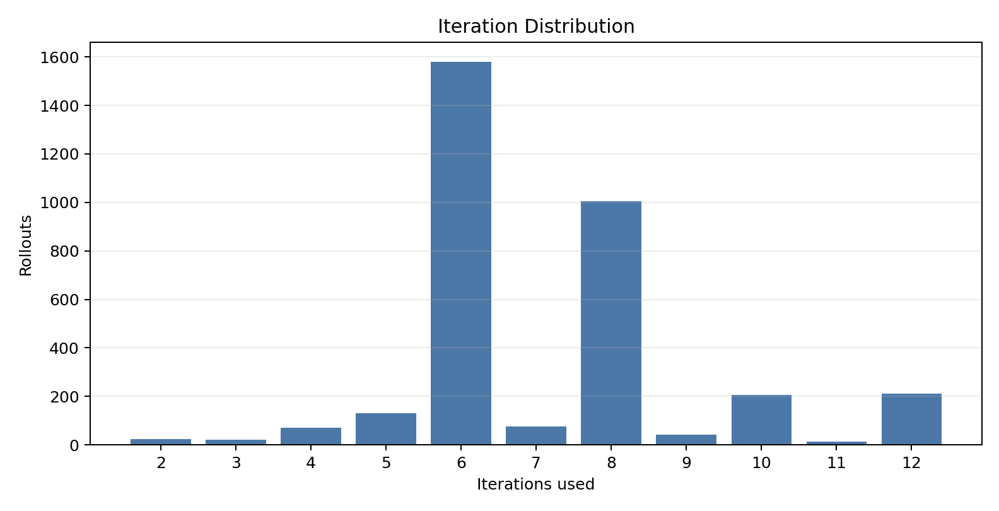
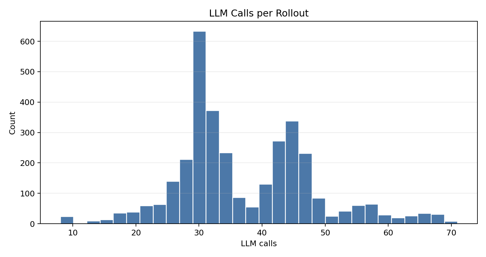
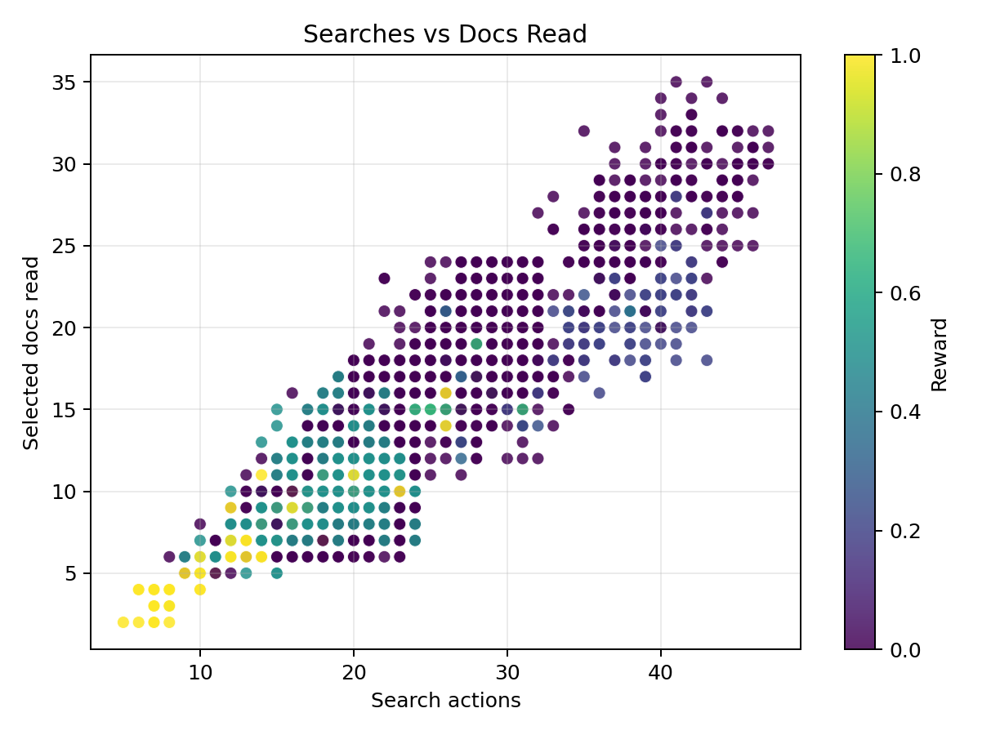
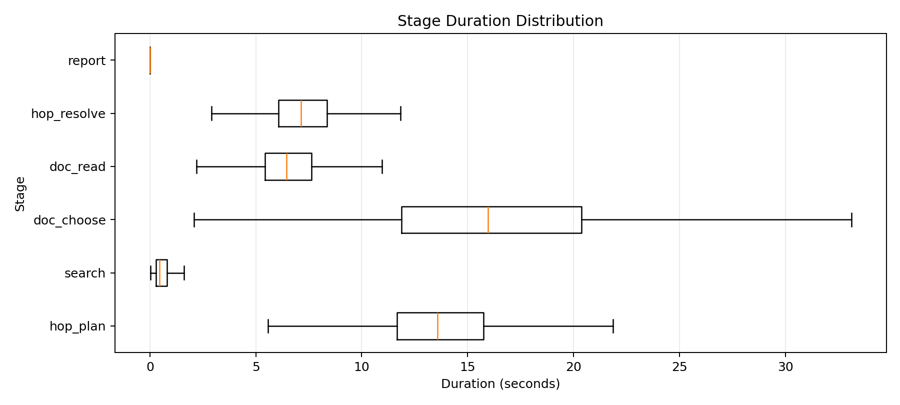
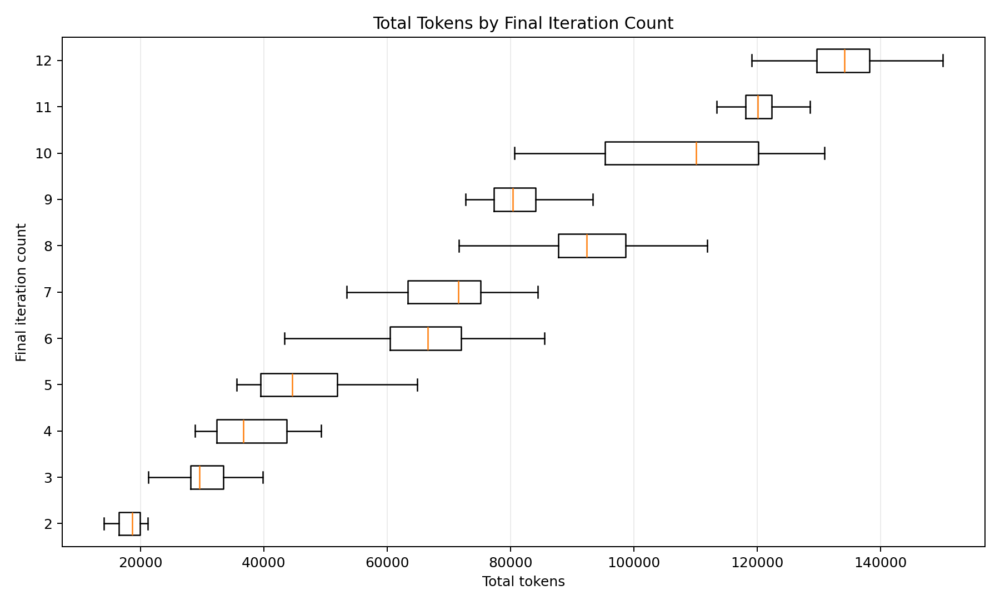
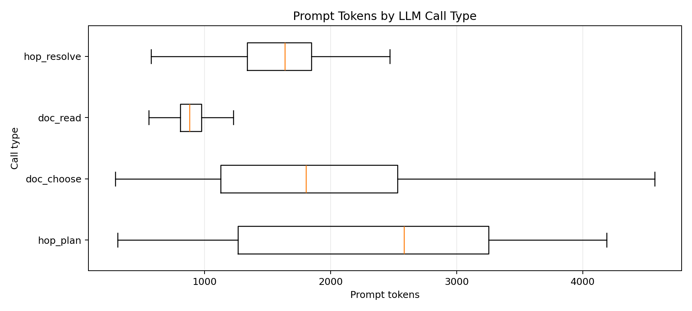

Runtime Analysis Viewer
Run: privacy_hopqa_qwen3_8b_async_v1
This viewer summarizes `privacy_hopqa` runtime behavior from saved rollout traces, token logs, and sampled artifacts. It mirrors the older privacy-agent viewer more closely, but keeps the hop-specific diagnostics and representative trace viewers at the bottom.
Loop: `hop_plan` picks up to 4 searches, retrieval runs, `doc_choose` selects up to 3 docs, `doc_read` inspects them, `hop_resolve` decides whether the current hop is answered, and the loop repeats until the chain is resolved or the budget is exhausted.
Overview Plots
These are the quickest plots to check for throughput shape, rollout duration, and how much search fanout is happening before document reading.
Rollout Duration Distribution
Completed rollout time across the sampled run. This is the fastest overall throughput sanity check.

Iteration Distribution
How many search-resolve loops the agent needed before terminating each rollout.

LLM Calls per Rollout
Total number of `hop_plan`, `doc_choose`, `doc_read`, and `hop_resolve` calls per rollout.

Searches vs Docs Read
Search fanout versus how many candidate docs were actually selected for close reading.

Context + Iteration Behavior
This section is usually the most useful for explaining why the run feels slow. It focuses on stage latency and how extra iterations add wall time and token usage.
Rollout Duration by Final Iteration
Completed rollout time split by how many iterations the hop-QA loop ended up using.

Stage Duration Distribution
Per-stage wall time distribution. This is the fastest way to see whether planning, choosing, reading, or resolving is dominating.

Total Tokens by Final Iteration
Aggregate prompt plus output token volume split by the final number of iterations.

LLM Token Usage
These views use the explicit `privacy_hopqa llm call summary` lines emitted by the async rollout adapter. They help separate prompt-heavy from generation-heavy stages.
Prompt Tokens by Call Type
Prompt-side token distribution by `hop_plan`, `doc_choose`, `doc_read`, and `hop_resolve`.

Output Tokens by Call Type
Response-token distribution by LLM call type. This is the quickest read on generation-heavy stages.

Total Tokens by Call Type
Combined prompt plus response token distribution by call type.

LLM Total Tokens per Rollout
Total LLM token volume per rollout across the full hop chain.

Reward Spot Checks
These views recompute reward from the saved report answers against the dataset ground truth, then show representative sampled reports and artifacts for manual inspection.
Reward Distribution
Reward counts recomputed from saved reports and dataset ground truth.

Reward by Hop Length
How reward changes as the chain gets longer.

Reward by Hop Pattern
Reward split by hop-type pattern like `LLL` or mixed local/web chains.

Per-Hop Position Accuracy
Percent of first hops, second hops, and later hops solved correctly.

Per-Hop Accuracy
| Hop | Accuracy | Solved / Total |
|---|---|---|
| 1 | 21.7% | 733 / 3382 |
| 2 | 2.7% | 91 / 3382 |
| 3 | 0.5% | 9 / 1670 |
| 4 | 0.2% | 1 / 616 |
| 5 | 0.0% | 0 / 258 |
Sampled Report Checks
| Rollout | Task | Chain | Pattern | Hops | Reward | Predicted Final | Gold Final | Artifacts |
|---|---|---|---|---|---|---|---|---|
| DR0079_dbef5af1_223863a5 | DR0079 | dbef5af1 | WL | 2 | 0.000 | NOT_FOUND | MX-300 | report timeline trace events |
| DR0079_dbef5af1_3fd5eba0 | DR0079 | dbef5af1 | WL | 2 | 0.000 | NOT_FOUND | MX-300 | report timeline trace events |
| DR0079_dbef5af1_e44ba3b8 | DR0079 | dbef5af1 | WL | 2 | 0.000 | NOT_FOUND | MX-300 | report timeline trace events |
| DR0002_4b9e3b87_a98524f0 | DR0002 | 4b9e3b87 | LLL | 3 | 0.000 | NOT_FOUND | 500 | report timeline trace events |
| DR0001_25cbf112_c8a12128 | DR0001 | 25cbf112 | WLL | 4 | 0.000 | NOT_FOUND | Q2 2022 | report timeline trace events |
| DR0010_0db8a3e5_15c67f52 | DR0010 | 0db8a3e5 | LWLW | 5 | 0.000 | NOT_FOUND | Colombia | report timeline trace events |
| DR0026_080d67f1_b354c28b | DR0026 | 080d67f1 | WLWL | 5 | 0.200 | NOT_FOUND | 30% | report timeline trace events |
| DR0044_85ea1c50_5521d314 | DR0044 | 85ea1c50 | LWL | 4 | 0.250 | NOT_FOUND | John Doe | report timeline trace events |
| DR0008_fdac8c9a_6792e376 | DR0008 | fdac8c9a | LLW | 3 | 0.333 | NOT_FOUND | Microsoft | report timeline trace events |
| DR0073_fe2c0014_a09eaeaa | DR0073 | fe2c0014 | WL | 2 | 0.500 | NOT_FOUND | 12% | report timeline trace events |
| DR0016_43e8e9df_5deecda5 | DR0016 | 43e8e9df | WL | 2 | 1.000 | Emily Patel | Emily Patel | report timeline trace events |
| DR0012_736e7d35_09f8aba6 | DR0012 | 736e7d35 | LL | 3 | 1.000 | 60% | 60% | report timeline trace events |
Error Behavior
Parse-error rate is normalized by the number of LLM calls at that stage, so it reflects how often the stage fails when it actually has a chance to fail.
Parse Error Rate by Stage
Parse failures normalized by the number of times that stage could have failed.

Error Counts by Stage
Absolute error volume by stage, split into parse errors, context overflows, and other failures.

Parse Error Rates
| Stage | Parse Errors | Attempts | Rate |
|---|---|---|---|
| hop_plan | 24 | 24910 | 0.10% |
| doc_choose | 3 | 24195 | 0.01% |
| doc_read | 2 | 54977 | 0.00% |
| hop_resolve | 1 | 24829 | 0.00% |
LLM Token Usage by Call Type
| Call Type | Calls | Median Prompt | Median Output | Median Total | Mean Total |
|---|---|---|---|---|---|
| hop_plan | 24910 | 2583.5 | 927.0 | 3591.0 | 3197.4 |
| doc_choose | 24195 | 1805.0 | 1110.0 | 2986.0 | 3022.6 |
| doc_read | 54977 | 881.0 | 364.0 | 1248.0 | 1305.9 |
| hop_resolve | 24829 | 1638.0 | 426.0 | 2078.0 | 2017.6 |
Summary Tables
Counts
| Metric | Value |
|---|---|
| Rollouts | 3382 |
| Mean reward | 0.109 |
| Solved fraction | 2.2% |
| Completed rollouts / s | 0.367 |
| Parse errors | 30 |
| Parse error rate | 0.02% |
| Context overflows | 0 |
Reward
| Statistic | Reward |
|---|---|
| count | 3382.000 |
| mean | 0.109 |
| median | 0.000 |
| min | 0.000 |
| p90 | 0.500 |
| p95 | 0.500 |
| max | 1.000 |
Duration
| Statistic | Seconds |
|---|---|
| count | 3382.000 |
| mean | 324.761 |
| median | 311.763 |
| min | 82.116 |
| p90 | 441.105 |
| p95 | 499.712 |
| max | 741.910 |
LLM Calls
| Statistic | Calls |
|---|---|
| count | 3382.000 |
| mean | 37.150 |
| median | 34.000 |
| min | 8.000 |
| p90 | 50.000 |
| p95 | 58.000 |
| max | 71.000 |
Rollouts
| Rollout | Pattern | Reward | Iters | Searches | Docs | Parse Err | Ctx Oflow | Duration (s) | Artifacts |
|---|---|---|---|---|---|---|---|---|---|
| DR0077_b10de00c_ef58cab5 | LL | 1.000 | 8 | 26 | 16 | 0 | 0 | 383.326 | report timeline trace |
| DR0077_b10de00c_4df177bf | LL | 1.000 | 7 | 24 | 13 | 0 | 0 | 361.485 | report timeline trace |
| DR0099_c4742644_e46bbc4a | WL | 1.000 | 6 | 20 | 11 | 0 | 0 | 331.397 | report timeline trace |
| DR0099_c4742644_bd37908d | WL | 1.000 | 6 | 23 | 10 | 0 | 0 | 325.028 | report timeline trace |
| DR0099_c4742644_d64c732a | WL | 1.000 | 6 | 20 | 10 | 0 | 0 | 318.686 | report timeline trace |
| DR0077_b10de00c_c3b98e48 | LL | 1.000 | 7 | 26 | 14 | 0 | 0 | 314.455 | report timeline trace |
| DR0099_c4742644_66dbada1 | WL | 1.000 | 6 | 17 | 10 | 0 | 0 | 313.601 | report timeline trace |
| DR0099_c4742644_1b04cf45 | WL | 1.000 | 6 | 21 | 10 | 0 | 0 | 304.607 | report timeline trace |
| DR0099_c4742644_bcc9bc84 | WL | 1.000 | 6 | 14 | 11 | 0 | 0 | 300.997 | report timeline trace |
| DR0077_b10de00c_252bcff3 | LL | 1.000 | 6 | 22 | 10 | 0 | 0 | 292.625 | report timeline trace |
| DR0099_c4742644_426596f5 | WL | 1.000 | 6 | 23 | 11 | 0 | 0 | 289.650 | report timeline trace |
| DR0036_feec6577_1949259c | WL | 1.000 | 5 | 20 | 12 | 0 | 0 | 285.643 | report timeline trace |
| DR0099_c4742644_acb79381 | WL | 1.000 | 6 | 19 | 11 | 0 | 0 | 283.689 | report timeline trace |
| DR0012_736e7d35_09f8aba6 | LL | 1.000 | 6 | 19 | 12 | 0 | 0 | 283.376 | report timeline trace |
| DR0099_c4742644_a636b40f | WL | 1.000 | 5 | 16 | 9 | 0 | 0 | 271.252 | report timeline trace |
| DR0016_43e8e9df_312da598 | WL | 1.000 | 5 | 17 | 11 | 0 | 0 | 270.568 | report timeline trace |
| DR0099_c4742644_33dfb248 | WL | 1.000 | 5 | 18 | 10 | 0 | 0 | 267.849 | report timeline trace |
| DR0099_c4742644_99c6e61a | WL | 1.000 | 5 | 18 | 11 | 0 | 0 | 267.523 | report timeline trace |
| DR0099_c4742644_30bf575a | WL | 1.000 | 5 | 18 | 10 | 0 | 0 | 266.166 | report timeline trace |
| DR0016_43e8e9df_4c8717a7 | WL | 1.000 | 5 | 17 | 12 | 0 | 0 | 265.654 | report timeline trace |
| DR0099_c4742644_44333b17 | WL | 1.000 | 5 | 17 | 9 | 0 | 0 | 257.595 | report timeline trace |
| DR0016_43e8e9df_22b5cd9d | WL | 1.000 | 5 | 18 | 7 | 0 | 0 | 245.492 | report timeline trace |
| DR0012_736e7d35_08aae411 | LL | 1.000 | 5 | 15 | 7 | 0 | 0 | 240.025 | report timeline trace |
| DR0016_43e8e9df_61105e99 | WL | 1.000 | 5 | 18 | 11 | 0 | 0 | 238.585 | report timeline trace |
| DR0099_c4742644_32484b9e | WL | 1.000 | 4 | 16 | 8 | 0 | 0 | 234.568 | report timeline trace |
| DR0099_c4742644_38743b19 | WL | 1.000 | 4 | 12 | 9 | 0 | 0 | 233.874 | report timeline trace |
| DR0012_736e7d35_8461547c | LL | 1.000 | 5 | 14 | 6 | 0 | 0 | 223.050 | report timeline trace |
| DR0016_43e8e9df_c1e6a0ae | WL | 1.000 | 4 | 14 | 9 | 0 | 0 | 222.366 | report timeline trace |
| DR0099_c4742644_93543d3c | WL | 1.000 | 5 | 17 | 9 | 0 | 0 | 219.097 | report timeline trace |
| DR0099_c4742644_4cf7c357 | WL | 1.000 | 4 | 13 | 6 | 0 | 0 | 214.607 | report timeline trace |
| DR0099_c4742644_158080b3 | WL | 1.000 | 4 | 13 | 7 | 0 | 0 | 207.278 | report timeline trace |
| DR0016_43e8e9df_e4e19438 | WL | 1.000 | 4 | 14 | 7 | 0 | 0 | 203.499 | report timeline trace |
| DR0099_c4742644_d4afde98 | WL | 1.000 | 4 | 13 | 7 | 0 | 0 | 198.104 | report timeline trace |
| DR0012_736e7d35_9a9c3ce0 | LL | 1.000 | 4 | 14 | 8 | 0 | 0 | 193.547 | report timeline trace |
| DR0012_736e7d35_9c2887e9 | LL | 1.000 | 4 | 13 | 7 | 0 | 0 | 191.210 | report timeline trace |
| DR0016_43e8e9df_ccaa2829 | WL | 1.000 | 4 | 13 | 7 | 0 | 0 | 190.730 | report timeline trace |
| DR0036_feec6577_3c2b9749 | WL | 1.000 | 4 | 14 | 6 | 0 | 0 | 188.028 | report timeline trace |
| DR0099_c4742644_2eb802e5 | WL | 1.000 | 4 | 12 | 7 | 0 | 0 | 187.257 | report timeline trace |
| DR0099_c4742644_9082b546 | WL | 1.000 | 3 | 12 | 6 | 0 | 0 | 164.238 | report timeline trace |
| DR0099_c4742644_c2cd7aa2 | WL | 1.000 | 3 | 9 | 5 | 0 | 0 | 162.387 | report timeline trace |
| DR0099_c4742644_38e1c4db | WL | 1.000 | 3 | 10 | 5 | 0 | 0 | 155.093 | report timeline trace |
| DR0099_c4742644_f7044dd2 | WL | 1.000 | 3 | 10 | 5 | 0 | 0 | 154.605 | report timeline trace |
| DR0016_43e8e9df_e6081106 | WL | 1.000 | 5 | 16 | 10 | 0 | 0 | 151.442 | report timeline trace |
| DR0016_43e8e9df_ee63ae1c | WL | 1.000 | 3 | 10 | 4 | 0 | 0 | 149.836 | report timeline trace |
| DR0099_c4742644_53cbcc43 | WL | 1.000 | 3 | 12 | 6 | 0 | 0 | 148.709 | report timeline trace |
| DR0016_43e8e9df_f87e2819 | WL | 1.000 | 3 | 11 | 5 | 0 | 0 | 145.852 | report timeline trace |
| DR0099_c4742644_64f9b456 | WL | 1.000 | 3 | 10 | 6 | 0 | 0 | 141.581 | report timeline trace |
| DR0099_c4742644_e049d4dc | WL | 1.000 | 2 | 6 | 4 | 0 | 0 | 132.761 | report timeline trace |
| DR0016_43e8e9df_235c9f0f | WL | 1.000 | 3 | 10 | 4 | 0 | 0 | 128.348 | report timeline trace |
| DR0099_c4742644_9071376b | WL | 1.000 | 2 | 8 | 4 | 0 | 0 | 117.459 | report timeline trace |
| DR0099_c4742644_df6bd88e | WL | 1.000 | 2 | 8 | 4 | 0 | 0 | 116.646 | report timeline trace |
| DR0099_c4742644_48948df5 | WL | 1.000 | 2 | 8 | 3 | 0 | 0 | 114.719 | report timeline trace |
| DR0099_c4742644_69584f15 | WL | 1.000 | 2 | 8 | 4 | 0 | 0 | 108.954 | report timeline trace |
| DR0099_c4742644_6fc5cf0e | WL | 1.000 | 2 | 7 | 4 | 0 | 0 | 107.372 | report timeline trace |
| DR0099_c4742644_718090a4 | WL | 1.000 | 2 | 8 | 3 | 0 | 0 | 104.647 | report timeline trace |
| DR0099_c4742644_da16be59 | WL | 1.000 | 2 | 7 | 4 | 0 | 0 | 103.180 | report timeline trace |
| DR0016_43e8e9df_f5509ea2 | WL | 1.000 | 2 | 8 | 3 | 0 | 0 | 102.863 | report timeline trace |
| DR0016_43e8e9df_5deecda5 | WL | 1.000 | 2 | 8 | 3 | 0 | 0 | 101.033 | report timeline trace |
| DR0016_43e8e9df_3a5e2454 | WL | 1.000 | 2 | 7 | 4 | 0 | 0 | 94.805 | report timeline trace |
| DR0099_c4742644_4b2ba5ff | WL | 1.000 | 2 | 7 | 3 | 0 | 0 | 94.574 | report timeline trace |
| DR0099_c4742644_a3f5a8d4 | WL | 1.000 | 2 | 6 | 4 | 0 | 0 | 93.658 | report timeline trace |
| DR0099_c4742644_f356140a | WL | 1.000 | 2 | 7 | 3 | 0 | 0 | 91.177 | report timeline trace |
| DR0016_43e8e9df_cbba5e69 | WL | 1.000 | 2 | 6 | 2 | 0 | 0 | 90.739 | report timeline trace |
| DR0099_c4742644_00a2484c | WL | 1.000 | 2 | 5 | 2 | 0 | 0 | 90.217 | report timeline trace |
| DR0016_43e8e9df_7e486153 | WL | 1.000 | 2 | 7 | 2 | 0 | 0 | 89.572 | report timeline trace |
| DR0016_43e8e9df_78819248 | WL | 1.000 | 2 | 7 | 2 | 0 | 0 | 88.882 | report timeline trace |
| DR0099_c4742644_3990dd09 | WL | 1.000 | 2 | 8 | 2 | 0 | 0 | 88.121 | report timeline trace |
| DR0016_43e8e9df_680808db | WL | 1.000 | 2 | 8 | 3 | 0 | 0 | 85.857 | report timeline trace |
| DR0016_43e8e9df_c5bea29c | WL | 1.000 | 2 | 8 | 3 | 0 | 0 | 85.416 | report timeline trace |
| DR0099_c4742644_c04898d8 | WL | 1.000 | 2 | 7 | 3 | 0 | 0 | 83.212 | report timeline trace |
| DR0016_43e8e9df_95706a24 | WL | 1.000 | 2 | 7 | 2 | 0 | 0 | 82.116 | report timeline trace |
| DR0016_43e8e9df_84047fa2 | WL | 1.000 | 6 | 20 | 11 | 1 | 0 | 270.577 | report timeline trace |
| DR0016_43e8e9df_46d66139 | WL | 1.000 | 5 | 15 | 9 | 1 | 0 | 227.258 | report timeline trace |
| DR0016_43e8e9df_e5a5bf1f | WL | 1.000 | 4 | 13 | 7 | 1 | 0 | 212.832 | report timeline trace |
| DR0008_fdac8c9a_9bcccdb1 | LLW | 0.667 | 8 | 27 | 16 | 0 | 0 | 448.941 | report timeline trace |
| DR0008_fdac8c9a_78a1350d | LLW | 0.667 | 8 | 27 | 15 | 0 | 0 | 448.105 | report timeline trace |
| DR0077_b10de00c_89bc8129 | LL | 0.667 | 8 | 26 | 15 | 0 | 0 | 404.217 | report timeline trace |
| DR0077_b10de00c_def880c2 | LL | 0.667 | 8 | 28 | 17 | 0 | 0 | 402.016 | report timeline trace |
| DR0077_b10de00c_c2d5402d | LL | 0.667 | 8 | 24 | 15 | 0 | 0 | 395.654 | report timeline trace |
| DR0077_b10de00c_4f9afacd | LL | 0.667 | 8 | 29 | 19 | 0 | 0 | 392.796 | report timeline trace |
| DR0077_b10de00c_1bec97e5 | LL | 0.667 | 8 | 25 | 18 | 0 | 0 | 385.767 | report timeline trace |
| DR0002_4b9e3b87_b2e13fd2 | LLL | 0.667 | 8 | 25 | 21 | 0 | 0 | 380.339 | report timeline trace |
| DR0077_b10de00c_4643c0b6 | LL | 0.667 | 8 | 25 | 15 | 0 | 0 | 377.561 | report timeline trace |
| DR0077_b10de00c_6e1ab7a2 | LL | 0.667 | 8 | 29 | 16 | 0 | 0 | 366.430 | report timeline trace |
| DR0077_b10de00c_8bd6f0e3 | LL | 0.667 | 8 | 25 | 15 | 0 | 0 | 353.745 | report timeline trace |
| DR0077_b10de00c_8fc9b2de | LL | 0.667 | 8 | 31 | 15 | 0 | 0 | 353.229 | report timeline trace |
| DR0077_b10de00c_0f45a8fe | LL | 0.667 | 8 | 28 | 17 | 0 | 0 | 344.661 | report timeline trace |
| DR0077_b10de00c_ec463457 | LL | 0.667 | 8 | 28 | 19 | 0 | 0 | 337.799 | report timeline trace |
| DR0073_fe2c0014_a19bd29a | WL | 0.500 | 6 | 23 | 13 | 0 | 0 | 379.329 | report timeline trace |
| DR0073_fe2c0014_91054823 | WL | 0.500 | 6 | 22 | 10 | 0 | 0 | 368.140 | report timeline trace |
| DR0073_fe2c0014_a763779a | WL | 0.500 | 6 | 18 | 9 | 0 | 0 | 367.275 | report timeline trace |
| DR0073_fe2c0014_61b0be12 | WL | 0.500 | 6 | 22 | 14 | 0 | 0 | 365.157 | report timeline trace |
| DR0073_fe2c0014_ed58e4c8 | WL | 0.500 | 6 | 19 | 11 | 0 | 0 | 363.778 | report timeline trace |
| DR0073_fe2c0014_6f42cde5 | WL | 0.500 | 6 | 22 | 10 | 0 | 0 | 360.968 | report timeline trace |
| DR0073_fe2c0014_f57bdb77 | WL | 0.500 | 6 | 23 | 13 | 0 | 0 | 360.751 | report timeline trace |
| DR0073_fe2c0014_5774a84d | WL | 0.500 | 6 | 21 | 12 | 0 | 0 | 360.422 | report timeline trace |
| DR0073_fe2c0014_ef703ea0 | WL | 0.500 | 6 | 21 | 12 | 0 | 0 | 359.819 | report timeline trace |
| DR0036_feec6577_681146e1 | WL | 0.500 | 6 | 23 | 15 | 0 | 0 | 358.091 | report timeline trace |
| DR0073_fe2c0014_c51ae9f1 | WL | 0.500 | 6 | 23 | 14 | 0 | 0 | 356.879 | report timeline trace |
| DR0073_fe2c0014_1e400d1e | WL | 0.500 | 6 | 21 | 10 | 0 | 0 | 353.072 | report timeline trace |
| DR0073_fe2c0014_4b7d380f | WL | 0.500 | 6 | 20 | 14 | 0 | 0 | 351.950 | report timeline trace |
| DR0073_fe2c0014_bae04cfa | WL | 0.500 | 6 | 19 | 9 | 0 | 0 | 351.032 | report timeline trace |
| DR0073_fe2c0014_51aee083 | WL | 0.500 | 6 | 20 | 14 | 0 | 0 | 350.593 | report timeline trace |
| DR0073_fe2c0014_8b3821d0 | WL | 0.500 | 6 | 24 | 12 | 0 | 0 | 349.835 | report timeline trace |
| DR0073_fe2c0014_6798d04a | WL | 0.500 | 6 | 21 | 15 | 0 | 0 | 349.472 | report timeline trace |
| DR0073_fe2c0014_63e8874f | WL | 0.500 | 6 | 21 | 13 | 0 | 0 | 348.997 | report timeline trace |
| DR0073_fe2c0014_f8a977fb | WL | 0.500 | 6 | 23 | 14 | 0 | 0 | 347.483 | report timeline trace |
| DR0036_feec6577_27d38248 | WL | 0.500 | 6 | 22 | 13 | 0 | 0 | 346.897 | report timeline trace |
| DR0073_fe2c0014_184ca979 | WL | 0.500 | 6 | 19 | 11 | 0 | 0 | 346.750 | report timeline trace |
| DR0073_fe2c0014_fcea3d95 | WL | 0.500 | 6 | 20 | 13 | 0 | 0 | 346.328 | report timeline trace |
| DR0073_fe2c0014_d3dfb7b6 | WL | 0.500 | 6 | 20 | 12 | 0 | 0 | 345.929 | report timeline trace |
| DR0073_fe2c0014_af650064 | WL | 0.500 | 6 | 20 | 10 | 0 | 0 | 345.664 | report timeline trace |
| DR0073_fe2c0014_d2535797 | WL | 0.500 | 6 | 21 | 13 | 0 | 0 | 345.395 | report timeline trace |
| DR0073_fe2c0014_29b47ff1 | WL | 0.500 | 6 | 20 | 12 | 0 | 0 | 345.156 | report timeline trace |
| DR0099_c4742644_1e24da6c | WL | 0.500 | 6 | 18 | 10 | 0 | 0 | 344.244 | report timeline trace |
| DR0073_fe2c0014_50f02021 | WL | 0.500 | 6 | 20 | 13 | 0 | 0 | 344.074 | report timeline trace |
| DR0073_fe2c0014_8a28052e | WL | 0.500 | 6 | 21 | 11 | 0 | 0 | 343.138 | report timeline trace |
| DR0099_c4742644_fcc10c1b | WL | 0.500 | 6 | 19 | 11 | 0 | 0 | 341.988 | report timeline trace |
| DR0073_fe2c0014_385581f4 | WL | 0.500 | 6 | 24 | 12 | 0 | 0 | 341.249 | report timeline trace |
| DR0073_fe2c0014_499edc62 | WL | 0.500 | 6 | 22 | 9 | 0 | 0 | 340.866 | report timeline trace |
Preview: rollouts.csv
| chain_id | context_overflow_errors | correct_hops | docs_read | duration_s | events_path | events_uri | final_correct | ground_truth_final_answer | hop_1_answer | hop_1_correct | hop_1_gold | hop_1_match_score | hop_2_answer | hop_2_correct | hop_2_gold | hop_2_match_score | hop_count | hop_pattern | iterations_used | llm_calls_total | output_tokens | parse_errors_total | predicted_final_answer | prompt_tokens | report_path | report_uri | resolved_hops | reward | rollout_id | searches_total | stalled | task_id | timeline_html | timeline_uri | total_errors | total_hops | total_tokens | trace_path | trace_uri |
|---|---|---|---|---|---|---|---|---|---|---|---|---|---|---|---|---|---|---|---|---|---|---|---|---|---|---|---|---|---|---|---|---|---|---|---|---|---|---|---|
| 06a7f3db | 0 | 0 | 14 | 273.3361354470253 | /mnt/llmd/results/exps/alexg/reason/privacy_hopqa_qwen3_8b_async_v1/privacy_hopqa_runs/DR0001_06a7f3db_00c57533/timeline_events.json | file:///mnt/llmd/results/exps/alexg/reason/privacy_hopqa_qwen3_8b_async_v1/privacy_hopqa_runs/DR0001_06a7f3db_00c57533/timeline_events.json | False | Emily Patel | NOT_FOUND | False | 85% | 0.0 | NOT_FOUND | False | Emily Patel | 0.0 | 2 | LL | 6 | 32 | 20514 | 0 | NOT_FOUND | 43794 | /mnt/llmd/results/exps/alexg/reason/privacy_hopqa_qwen3_8b_async_v1/privacy_hopqa_runs/DR0001_06a7f3db_00c57533/workspace/research_report... | file:///mnt/llmd/results/exps/alexg/reason/privacy_hopqa_qwen3_8b_async_v1/privacy_hopqa_runs/DR0001_06a7f3db_00c57533/workspace/research... | 0 | 0.0 | DR0001_06a7f3db_00c57533 | 24 | False | DR0001 | /mnt/llmd/results/exps/alexg/reason/privacy_hopqa_qwen3_8b_async_v1/privacy_hopqa_runs/DR0001_06a7f3db_00c57533/timeline.html | file:///mnt/llmd/results/exps/alexg/reason/privacy_hopqa_qwen3_8b_async_v1/privacy_hopqa_runs/DR0001_06a7f3db_00c57533/timeline.html | 0 | 2 | 64308 | /mnt/llmd/results/exps/alexg/reason/privacy_hopqa_qwen3_8b_async_v1/privacy_hopqa_runs/DR0001_06a7f3db_00c57533/trace.json | file:///mnt/llmd/results/exps/alexg/reason/privacy_hopqa_qwen3_8b_async_v1/privacy_hopqa_runs/DR0001_06a7f3db_00c57533/trace.json |
| 06a7f3db | 0 | 0 | 15 | 294.32829013001174 | /mnt/llmd/results/exps/alexg/reason/privacy_hopqa_qwen3_8b_async_v1/privacy_hopqa_runs/DR0001_06a7f3db_02111a73/timeline_events.json | file:///mnt/llmd/results/exps/alexg/reason/privacy_hopqa_qwen3_8b_async_v1/privacy_hopqa_runs/DR0001_06a7f3db_02111a73/timeline_events.json | False | Emily Patel | NOT_FOUND | False | 85% | 0.0 | NOT_FOUND | False | Emily Patel | 0.0 | 2 | LL | 6 | 33 | 21924 | 0 | NOT_FOUND | 48593 | /mnt/llmd/results/exps/alexg/reason/privacy_hopqa_qwen3_8b_async_v1/privacy_hopqa_runs/DR0001_06a7f3db_02111a73/workspace/research_report... | file:///mnt/llmd/results/exps/alexg/reason/privacy_hopqa_qwen3_8b_async_v1/privacy_hopqa_runs/DR0001_06a7f3db_02111a73/workspace/research... | 0 | 0.0 | DR0001_06a7f3db_02111a73 | 24 | False | DR0001 | /mnt/llmd/results/exps/alexg/reason/privacy_hopqa_qwen3_8b_async_v1/privacy_hopqa_runs/DR0001_06a7f3db_02111a73/timeline.html | file:///mnt/llmd/results/exps/alexg/reason/privacy_hopqa_qwen3_8b_async_v1/privacy_hopqa_runs/DR0001_06a7f3db_02111a73/timeline.html | 0 | 2 | 70517 | /mnt/llmd/results/exps/alexg/reason/privacy_hopqa_qwen3_8b_async_v1/privacy_hopqa_runs/DR0001_06a7f3db_02111a73/trace.json | file:///mnt/llmd/results/exps/alexg/reason/privacy_hopqa_qwen3_8b_async_v1/privacy_hopqa_runs/DR0001_06a7f3db_02111a73/trace.json |
| 06a7f3db | 0 | 0 | 16 | 246.10949862282723 | /mnt/llmd/results/exps/alexg/reason/privacy_hopqa_qwen3_8b_async_v1/privacy_hopqa_runs/DR0001_06a7f3db_026f4089/timeline_events.json | file:///mnt/llmd/results/exps/alexg/reason/privacy_hopqa_qwen3_8b_async_v1/privacy_hopqa_runs/DR0001_06a7f3db_026f4089/timeline_events.json | False | Emily Patel | NOT_FOUND | False | 85% | 0.0 | NOT_FOUND | False | Emily Patel | 0.0 | 2 | LL | 6 | 34 | 19152 | 0 | NOT_FOUND | 45223 | /mnt/llmd/results/exps/alexg/reason/privacy_hopqa_qwen3_8b_async_v1/privacy_hopqa_runs/DR0001_06a7f3db_026f4089/workspace/research_report... | file:///mnt/llmd/results/exps/alexg/reason/privacy_hopqa_qwen3_8b_async_v1/privacy_hopqa_runs/DR0001_06a7f3db_026f4089/workspace/research... | 0 | 0.0 | DR0001_06a7f3db_026f4089 | 22 | False | DR0001 | /mnt/llmd/results/exps/alexg/reason/privacy_hopqa_qwen3_8b_async_v1/privacy_hopqa_runs/DR0001_06a7f3db_026f4089/timeline.html | file:///mnt/llmd/results/exps/alexg/reason/privacy_hopqa_qwen3_8b_async_v1/privacy_hopqa_runs/DR0001_06a7f3db_026f4089/timeline.html | 0 | 2 | 64375 | /mnt/llmd/results/exps/alexg/reason/privacy_hopqa_qwen3_8b_async_v1/privacy_hopqa_runs/DR0001_06a7f3db_026f4089/trace.json | file:///mnt/llmd/results/exps/alexg/reason/privacy_hopqa_qwen3_8b_async_v1/privacy_hopqa_runs/DR0001_06a7f3db_026f4089/trace.json |
| 06a7f3db | 0 | 0 | 14 | 259.7250170421321 | /mnt/llmd/results/exps/alexg/reason/privacy_hopqa_qwen3_8b_async_v1/privacy_hopqa_runs/DR0001_06a7f3db_042e4602/timeline_events.json | file:///mnt/llmd/results/exps/alexg/reason/privacy_hopqa_qwen3_8b_async_v1/privacy_hopqa_runs/DR0001_06a7f3db_042e4602/timeline_events.json | False | Emily Patel | NOT_FOUND | False | 85% | 0.0 | NOT_FOUND | False | Emily Patel | 0.0 | 2 | LL | 6 | 32 | 19013 | 0 | NOT_FOUND | 43639 | /mnt/llmd/results/exps/alexg/reason/privacy_hopqa_qwen3_8b_async_v1/privacy_hopqa_runs/DR0001_06a7f3db_042e4602/workspace/research_report... | file:///mnt/llmd/results/exps/alexg/reason/privacy_hopqa_qwen3_8b_async_v1/privacy_hopqa_runs/DR0001_06a7f3db_042e4602/workspace/research... | 0 | 0.0 | DR0001_06a7f3db_042e4602 | 24 | False | DR0001 | /mnt/llmd/results/exps/alexg/reason/privacy_hopqa_qwen3_8b_async_v1/privacy_hopqa_runs/DR0001_06a7f3db_042e4602/timeline.html | file:///mnt/llmd/results/exps/alexg/reason/privacy_hopqa_qwen3_8b_async_v1/privacy_hopqa_runs/DR0001_06a7f3db_042e4602/timeline.html | 0 | 2 | 62652 | /mnt/llmd/results/exps/alexg/reason/privacy_hopqa_qwen3_8b_async_v1/privacy_hopqa_runs/DR0001_06a7f3db_042e4602/trace.json | file:///mnt/llmd/results/exps/alexg/reason/privacy_hopqa_qwen3_8b_async_v1/privacy_hopqa_runs/DR0001_06a7f3db_042e4602/trace.json |
| 06a7f3db | 0 | 0 | 17 | 297.73969097808003 | /mnt/llmd/results/exps/alexg/reason/privacy_hopqa_qwen3_8b_async_v1/privacy_hopqa_runs/DR0001_06a7f3db_045b5e22/timeline_events.json | file:///mnt/llmd/results/exps/alexg/reason/privacy_hopqa_qwen3_8b_async_v1/privacy_hopqa_runs/DR0001_06a7f3db_045b5e22/timeline_events.json | False | Emily Patel | NOT_FOUND | False | 85% | 0.0 | NOT_FOUND | False | Emily Patel | 0.0 | 2 | LL | 6 | 35 | 21950 | 0 | NOT_FOUND | 49628 | /mnt/llmd/results/exps/alexg/reason/privacy_hopqa_qwen3_8b_async_v1/privacy_hopqa_runs/DR0001_06a7f3db_045b5e22/workspace/research_report... | file:///mnt/llmd/results/exps/alexg/reason/privacy_hopqa_qwen3_8b_async_v1/privacy_hopqa_runs/DR0001_06a7f3db_045b5e22/workspace/research... | 0 | 0.0 | DR0001_06a7f3db_045b5e22 | 22 | False | DR0001 | /mnt/llmd/results/exps/alexg/reason/privacy_hopqa_qwen3_8b_async_v1/privacy_hopqa_runs/DR0001_06a7f3db_045b5e22/timeline.html | file:///mnt/llmd/results/exps/alexg/reason/privacy_hopqa_qwen3_8b_async_v1/privacy_hopqa_runs/DR0001_06a7f3db_045b5e22/timeline.html | 0 | 2 | 71578 | /mnt/llmd/results/exps/alexg/reason/privacy_hopqa_qwen3_8b_async_v1/privacy_hopqa_runs/DR0001_06a7f3db_045b5e22/trace.json | file:///mnt/llmd/results/exps/alexg/reason/privacy_hopqa_qwen3_8b_async_v1/privacy_hopqa_runs/DR0001_06a7f3db_045b5e22/trace.json |
| 06a7f3db | 0 | 0 | 12 | 258.3430552619975 | /mnt/llmd/results/exps/alexg/reason/privacy_hopqa_qwen3_8b_async_v1/privacy_hopqa_runs/DR0001_06a7f3db_07e68c72/timeline_events.json | file:///mnt/llmd/results/exps/alexg/reason/privacy_hopqa_qwen3_8b_async_v1/privacy_hopqa_runs/DR0001_06a7f3db_07e68c72/timeline_events.json | False | Emily Patel | NOT_FOUND | False | 85% | 0.0 | NOT_FOUND | False | Emily Patel | 0.0 | 2 | LL | 6 | 30 | 19175 | 0 | NOT_FOUND | 43069 | /mnt/llmd/results/exps/alexg/reason/privacy_hopqa_qwen3_8b_async_v1/privacy_hopqa_runs/DR0001_06a7f3db_07e68c72/workspace/research_report... | file:///mnt/llmd/results/exps/alexg/reason/privacy_hopqa_qwen3_8b_async_v1/privacy_hopqa_runs/DR0001_06a7f3db_07e68c72/workspace/research... | 0 | 0.0 | DR0001_06a7f3db_07e68c72 | 24 | False | DR0001 | /mnt/llmd/results/exps/alexg/reason/privacy_hopqa_qwen3_8b_async_v1/privacy_hopqa_runs/DR0001_06a7f3db_07e68c72/timeline.html | file:///mnt/llmd/results/exps/alexg/reason/privacy_hopqa_qwen3_8b_async_v1/privacy_hopqa_runs/DR0001_06a7f3db_07e68c72/timeline.html | 0 | 2 | 62244 | /mnt/llmd/results/exps/alexg/reason/privacy_hopqa_qwen3_8b_async_v1/privacy_hopqa_runs/DR0001_06a7f3db_07e68c72/trace.json | file:///mnt/llmd/results/exps/alexg/reason/privacy_hopqa_qwen3_8b_async_v1/privacy_hopqa_runs/DR0001_06a7f3db_07e68c72/trace.json |
| 06a7f3db | 0 | 0 | 16 | 263.1772532360628 | /mnt/llmd/results/exps/alexg/reason/privacy_hopqa_qwen3_8b_async_v1/privacy_hopqa_runs/DR0001_06a7f3db_0a8ca9a2/timeline_events.json | file:///mnt/llmd/results/exps/alexg/reason/privacy_hopqa_qwen3_8b_async_v1/privacy_hopqa_runs/DR0001_06a7f3db_0a8ca9a2/timeline_events.json | False | Emily Patel | NOT_FOUND | False | 85% | 0.0 | NOT_FOUND | False | Emily Patel | 0.0 | 2 | LL | 6 | 34 | 19890 | 0 | NOT_FOUND | 47336 | /mnt/llmd/results/exps/alexg/reason/privacy_hopqa_qwen3_8b_async_v1/privacy_hopqa_runs/DR0001_06a7f3db_0a8ca9a2/workspace/research_report... | file:///mnt/llmd/results/exps/alexg/reason/privacy_hopqa_qwen3_8b_async_v1/privacy_hopqa_runs/DR0001_06a7f3db_0a8ca9a2/workspace/research... | 0 | 0.0 | DR0001_06a7f3db_0a8ca9a2 | 22 | False | DR0001 | /mnt/llmd/results/exps/alexg/reason/privacy_hopqa_qwen3_8b_async_v1/privacy_hopqa_runs/DR0001_06a7f3db_0a8ca9a2/timeline.html | file:///mnt/llmd/results/exps/alexg/reason/privacy_hopqa_qwen3_8b_async_v1/privacy_hopqa_runs/DR0001_06a7f3db_0a8ca9a2/timeline.html | 0 | 2 | 67226 | /mnt/llmd/results/exps/alexg/reason/privacy_hopqa_qwen3_8b_async_v1/privacy_hopqa_runs/DR0001_06a7f3db_0a8ca9a2/trace.json | file:///mnt/llmd/results/exps/alexg/reason/privacy_hopqa_qwen3_8b_async_v1/privacy_hopqa_runs/DR0001_06a7f3db_0a8ca9a2/trace.json |
| 06a7f3db | 0 | 0 | 17 | 287.38211773405783 | /mnt/llmd/results/exps/alexg/reason/privacy_hopqa_qwen3_8b_async_v1/privacy_hopqa_runs/DR0001_06a7f3db_0bd738a4/timeline_events.json | file:///mnt/llmd/results/exps/alexg/reason/privacy_hopqa_qwen3_8b_async_v1/privacy_hopqa_runs/DR0001_06a7f3db_0bd738a4/timeline_events.json | False | Emily Patel | NOT_FOUND | False | 85% | 0.0 | NOT_FOUND | False | Emily Patel | 0.0 | 2 | LL | 6 | 35 | 22203 | 0 | NOT_FOUND | 51428 | /mnt/llmd/results/exps/alexg/reason/privacy_hopqa_qwen3_8b_async_v1/privacy_hopqa_runs/DR0001_06a7f3db_0bd738a4/workspace/research_report... | file:///mnt/llmd/results/exps/alexg/reason/privacy_hopqa_qwen3_8b_async_v1/privacy_hopqa_runs/DR0001_06a7f3db_0bd738a4/workspace/research... | 0 | 0.0 | DR0001_06a7f3db_0bd738a4 | 24 | False | DR0001 | /mnt/llmd/results/exps/alexg/reason/privacy_hopqa_qwen3_8b_async_v1/privacy_hopqa_runs/DR0001_06a7f3db_0bd738a4/timeline.html | file:///mnt/llmd/results/exps/alexg/reason/privacy_hopqa_qwen3_8b_async_v1/privacy_hopqa_runs/DR0001_06a7f3db_0bd738a4/timeline.html | 0 | 2 | 73631 | /mnt/llmd/results/exps/alexg/reason/privacy_hopqa_qwen3_8b_async_v1/privacy_hopqa_runs/DR0001_06a7f3db_0bd738a4/trace.json | file:///mnt/llmd/results/exps/alexg/reason/privacy_hopqa_qwen3_8b_async_v1/privacy_hopqa_runs/DR0001_06a7f3db_0bd738a4/trace.json |
| 06a7f3db | 0 | 0 | 14 | 275.0267742150463 | /mnt/llmd/results/exps/alexg/reason/privacy_hopqa_qwen3_8b_async_v1/privacy_hopqa_runs/DR0001_06a7f3db_0d0ecdd4/timeline_events.json | file:///mnt/llmd/results/exps/alexg/reason/privacy_hopqa_qwen3_8b_async_v1/privacy_hopqa_runs/DR0001_06a7f3db_0d0ecdd4/timeline_events.json | False | Emily Patel | NOT_FOUND | False | 85% | 0.0 | NOT_FOUND | False | Emily Patel | 0.0 | 2 | LL | 6 | 32 | 21342 | 0 | NOT_FOUND | 43121 | /mnt/llmd/results/exps/alexg/reason/privacy_hopqa_qwen3_8b_async_v1/privacy_hopqa_runs/DR0001_06a7f3db_0d0ecdd4/workspace/research_report... | file:///mnt/llmd/results/exps/alexg/reason/privacy_hopqa_qwen3_8b_async_v1/privacy_hopqa_runs/DR0001_06a7f3db_0d0ecdd4/workspace/research... | 0 | 0.0 | DR0001_06a7f3db_0d0ecdd4 | 22 | False | DR0001 | /mnt/llmd/results/exps/alexg/reason/privacy_hopqa_qwen3_8b_async_v1/privacy_hopqa_runs/DR0001_06a7f3db_0d0ecdd4/timeline.html | file:///mnt/llmd/results/exps/alexg/reason/privacy_hopqa_qwen3_8b_async_v1/privacy_hopqa_runs/DR0001_06a7f3db_0d0ecdd4/timeline.html | 0 | 2 | 64463 | /mnt/llmd/results/exps/alexg/reason/privacy_hopqa_qwen3_8b_async_v1/privacy_hopqa_runs/DR0001_06a7f3db_0d0ecdd4/trace.json | file:///mnt/llmd/results/exps/alexg/reason/privacy_hopqa_qwen3_8b_async_v1/privacy_hopqa_runs/DR0001_06a7f3db_0d0ecdd4/trace.json |
| 06a7f3db | 0 | 0 | 17 | 186.32152774580754 | /mnt/llmd/results/exps/alexg/reason/privacy_hopqa_qwen3_8b_async_v1/privacy_hopqa_runs/DR0001_06a7f3db_0e130211/timeline_events.json | file:///mnt/llmd/results/exps/alexg/reason/privacy_hopqa_qwen3_8b_async_v1/privacy_hopqa_runs/DR0001_06a7f3db_0e130211/timeline_events.json | False | Emily Patel | NOT_FOUND | False | 85% | 0.0 | NOT_FOUND | False | Emily Patel | 0.0 | 2 | LL | 6 | 35 | 20966 | 0 | NOT_FOUND | 49061 | /mnt/llmd/results/exps/alexg/reason/privacy_hopqa_qwen3_8b_async_v1/privacy_hopqa_runs/DR0001_06a7f3db_0e130211/workspace/research_report... | file:///mnt/llmd/results/exps/alexg/reason/privacy_hopqa_qwen3_8b_async_v1/privacy_hopqa_runs/DR0001_06a7f3db_0e130211/workspace/research... | 0 | 0.0 | DR0001_06a7f3db_0e130211 | 21 | False | DR0001 | /mnt/llmd/results/exps/alexg/reason/privacy_hopqa_qwen3_8b_async_v1/privacy_hopqa_runs/DR0001_06a7f3db_0e130211/timeline.html | file:///mnt/llmd/results/exps/alexg/reason/privacy_hopqa_qwen3_8b_async_v1/privacy_hopqa_runs/DR0001_06a7f3db_0e130211/timeline.html | 0 | 2 | 70027 | /mnt/llmd/results/exps/alexg/reason/privacy_hopqa_qwen3_8b_async_v1/privacy_hopqa_runs/DR0001_06a7f3db_0e130211/trace.json | file:///mnt/llmd/results/exps/alexg/reason/privacy_hopqa_qwen3_8b_async_v1/privacy_hopqa_runs/DR0001_06a7f3db_0e130211/trace.json |
| 06a7f3db | 0 | 1 | 13 | 243.23039713106118 | /mnt/llmd/results/exps/alexg/reason/privacy_hopqa_qwen3_8b_async_v1/privacy_hopqa_runs/DR0001_06a7f3db_0f82ae1a/timeline_events.json | file:///mnt/llmd/results/exps/alexg/reason/privacy_hopqa_qwen3_8b_async_v1/privacy_hopqa_runs/DR0001_06a7f3db_0f82ae1a/timeline_events.json | False | Emily Patel | 85% | True | 85% | 1.0 | NOT_FOUND | False | Emily Patel | 0.0 | 2 | LL | 6 | 31 | 17204 | 0 | NOT_FOUND | 39775 | /mnt/llmd/results/exps/alexg/reason/privacy_hopqa_qwen3_8b_async_v1/privacy_hopqa_runs/DR0001_06a7f3db_0f82ae1a/workspace/research_report... | file:///mnt/llmd/results/exps/alexg/reason/privacy_hopqa_qwen3_8b_async_v1/privacy_hopqa_runs/DR0001_06a7f3db_0f82ae1a/workspace/research... | 1 | 0.5 | DR0001_06a7f3db_0f82ae1a | 18 | False | DR0001 | /mnt/llmd/results/exps/alexg/reason/privacy_hopqa_qwen3_8b_async_v1/privacy_hopqa_runs/DR0001_06a7f3db_0f82ae1a/timeline.html | file:///mnt/llmd/results/exps/alexg/reason/privacy_hopqa_qwen3_8b_async_v1/privacy_hopqa_runs/DR0001_06a7f3db_0f82ae1a/timeline.html | 0 | 2 | 56979 | /mnt/llmd/results/exps/alexg/reason/privacy_hopqa_qwen3_8b_async_v1/privacy_hopqa_runs/DR0001_06a7f3db_0f82ae1a/trace.json | file:///mnt/llmd/results/exps/alexg/reason/privacy_hopqa_qwen3_8b_async_v1/privacy_hopqa_runs/DR0001_06a7f3db_0f82ae1a/trace.json |
| 06a7f3db | 0 | 1 | 15 | 288.9175758189522 | /mnt/llmd/results/exps/alexg/reason/privacy_hopqa_qwen3_8b_async_v1/privacy_hopqa_runs/DR0001_06a7f3db_10cf865f/timeline_events.json | file:///mnt/llmd/results/exps/alexg/reason/privacy_hopqa_qwen3_8b_async_v1/privacy_hopqa_runs/DR0001_06a7f3db_10cf865f/timeline_events.json | False | Emily Patel | 85% | True | 85% | 1.0 | NOT_FOUND | False | Emily Patel | 0.0 | 2 | LL | 6 | 33 | 21502 | 0 | NOT_FOUND | 46607 | /mnt/llmd/results/exps/alexg/reason/privacy_hopqa_qwen3_8b_async_v1/privacy_hopqa_runs/DR0001_06a7f3db_10cf865f/workspace/research_report... | file:///mnt/llmd/results/exps/alexg/reason/privacy_hopqa_qwen3_8b_async_v1/privacy_hopqa_runs/DR0001_06a7f3db_10cf865f/workspace/research... | 1 | 0.5 | DR0001_06a7f3db_10cf865f | 22 | False | DR0001 | /mnt/llmd/results/exps/alexg/reason/privacy_hopqa_qwen3_8b_async_v1/privacy_hopqa_runs/DR0001_06a7f3db_10cf865f/timeline.html | file:///mnt/llmd/results/exps/alexg/reason/privacy_hopqa_qwen3_8b_async_v1/privacy_hopqa_runs/DR0001_06a7f3db_10cf865f/timeline.html | 0 | 2 | 68109 | /mnt/llmd/results/exps/alexg/reason/privacy_hopqa_qwen3_8b_async_v1/privacy_hopqa_runs/DR0001_06a7f3db_10cf865f/trace.json | file:///mnt/llmd/results/exps/alexg/reason/privacy_hopqa_qwen3_8b_async_v1/privacy_hopqa_runs/DR0001_06a7f3db_10cf865f/trace.json |
Preview: errors.csv
| chain_id | elapsed_s | hop_number | iteration | kind | message | rollout_id | stage | task_id |
|---|---|---|---|---|---|---|---|---|
| 06a7f3db | 10.309519 | 1 | 0 | parse_error | No valid JSON found in response: line 1 column 1 (char 0) | DR0001_06a7f3db_31a2de32 | hop_plan | DR0001 |
| 06a7f3db | 13.645006 | 1 | 0 | parse_error | No valid JSON found in response: line 1 column 1 (char 0) | DR0001_06a7f3db_c11ce7c7 | hop_plan | DR0001 |
| 25cbf112 | 150.15671 | 1 | 3 | parse_error | No valid JSON found in response: line 1 column 1 (char 0) | DR0001_25cbf112_e7680a99 | hop_plan | DR0001 |
| 85415553 | 23.705899 | 1 | 0 | other | 500, message='Internal Server Error', url='http://dns-c8772dd6-7e4c-4f14-8fb5-1237da11fac3-1:8081/v1/chat/completions' | DR0003_85415553_e0da0bac | hop_plan | DR0003 |
| 98338d1b | 147.512228 | 1 | 3 | parse_error | No valid JSON found in response: line 1 column 1 (char 0) | DR0003_98338d1b_753e2de5 | hop_plan | DR0003 |
| 98338d1b | 10.696929 | 1 | 0 | parse_error | No valid JSON found in response: line 1 column 1 (char 0) | DR0003_98338d1b_90933bdf | hop_plan | DR0003 |
| 98338d1b | 58.127805 | 1 | 1 | parse_error | No valid JSON found in response: line 1 column 1 (char 0) | DR0003_98338d1b_c6c8aff2 | hop_plan | DR0003 |
| 98338d1b | 29.479774 | 1 | 0 | parse_error | No valid JSON found in response: line 1 column 1 (char 0) | DR0003_98338d1b_f670cdf1 | doc_choose | DR0003 |
| 51277225 | 16.070297 | 1 | 0 | parse_error | No valid JSON found in response: line 1 column 1 (char 0) | DR0005_51277225_144b81ea | hop_plan | DR0005 |
| 51277225 | 257.930155 | 1 | 5 | parse_error | No valid JSON found in response: line 1 column 1 (char 0) | DR0005_51277225_44bf16b2 | hop_plan | DR0005 |
| 51277225 | 254.55839 | 1 | 5 | parse_error | No valid JSON found in response: line 1 column 1 (char 0) | DR0005_51277225_58f782e8 | hop_plan | DR0005 |
| 51277225 | 72.417966 | 1 | 1 | parse_error | No valid JSON found in response: line 1 column 1 (char 0) | DR0005_51277225_c15738ac | doc_choose | DR0005 |
Preview: llm_calls.csv
| captured | chain_id | log_name | output_tokens | prompt_tokens | rollout_id | task_id | total_tokens |
|---|---|---|---|---|---|---|---|
| True | 736e7d35 | hop_plan | 634 | 363 | DR0012_736e7d35_8b431d64 | DR0012 | 997 |
| True | 85ea1c50 | hop_plan | 649 | 393 | DR0044_85ea1c50_541fba9a | DR0044 | 1042 |
| True | 4b9e3b87 | hop_plan | 685 | 389 | DR0002_4b9e3b87_e9a4fc7d | DR0002 | 1074 |
| True | fdac8c9a | hop_plan | 732 | 351 | DR0008_fdac8c9a_f867f6b1 | DR0008 | 1083 |
| True | 43e8e9df | hop_plan | 772 | 363 | DR0016_43e8e9df_e6081106 | DR0016 | 1135 |
| True | 25cbf112 | hop_plan | 769 | 376 | DR0001_25cbf112_3ca84157 | DR0001 | 1145 |
| True | b10de00c | hop_plan | 765 | 367 | DR0077_b10de00c_a99b5f5c | DR0077 | 1132 |
| True | 85415553 | hop_plan | 821 | 353 | DR0003_85415553_5a616386 | DR0003 | 1174 |
| True | c4742644 | hop_plan | 849 | 313 | DR0099_c4742644_cb984ace | DR0099 | 1162 |
| True | 06a7f3db | hop_plan | 853 | 350 | DR0001_06a7f3db_0e130211 | DR0001 | 1203 |
| True | 51277225 | hop_plan | 828 | 350 | DR0005_51277225_bd336b1e | DR0005 | 1178 |
| True | feec6577 | hop_plan | 897 | 349 | DR0036_feec6577_88a5a85f | DR0036 | 1246 |
Raw Files + Caveats
Raw Outputs
Caveats
- Representative traces are a 12-rollout sample chosen for qualitative debugging across different outcomes and hop lengths; they are not aggregate statistics for the whole run.
- Current runs only show raw prompt text in the timeline when prompt logging is enabled. Otherwise the timeline falls back to structured trace state and tool outputs.
Representative Traces
These rooflines are intentionally at the bottom so the main summary reads first. Each card links to a sampled report, interactive timeline, trace JSON, and event log for manual debugging.